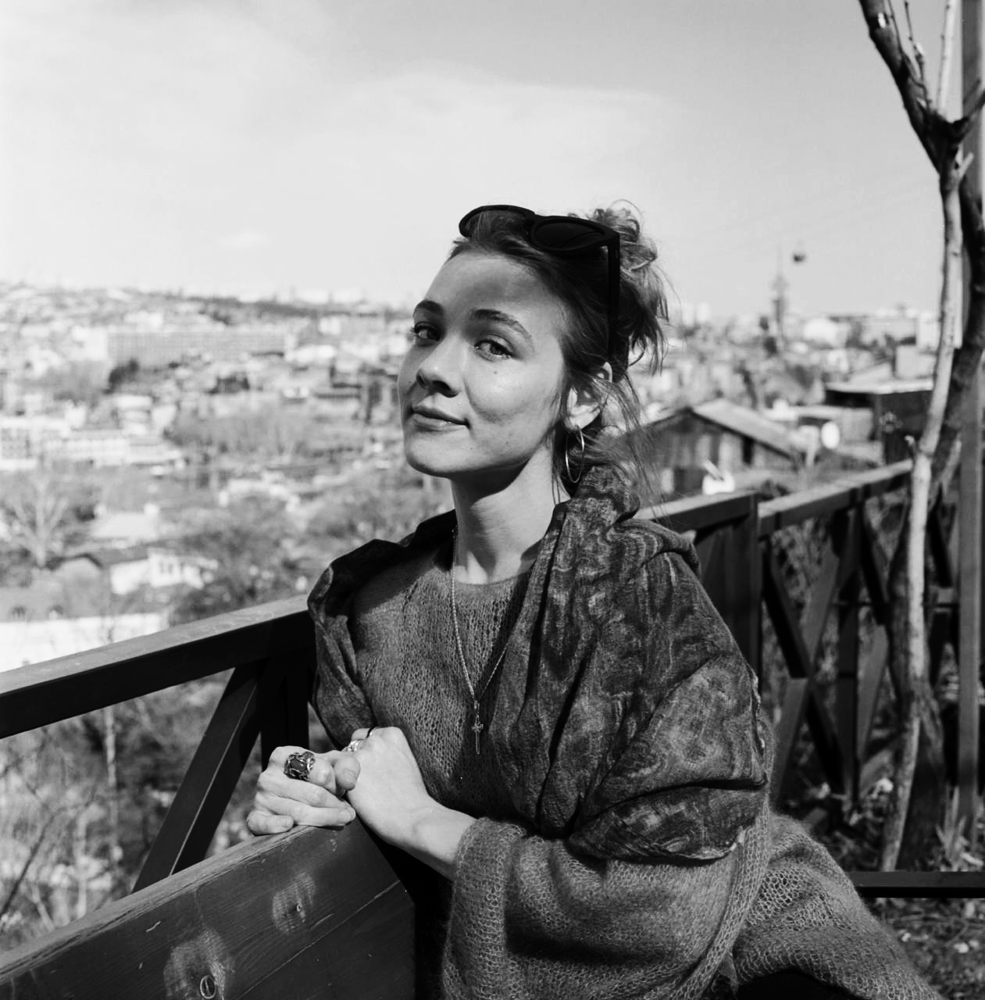

Анна Павленко · экзистенциальный психолог
Привет. Я Анна
Живу и работаю в Тбилиси, принимаю очно и онлайн. Ниже расскажу, как я пришла к своей практике: путь объясняет метод честнее, чем список дипломов.
(Фото моих дипломов и сертификатов живут здесь).

Сначала была музыка
Один аккорд иногда достаёт воспоминание быстрее, чем час разговора
Музыку я люблю столько, сколько помню себя, и всегда с неугасающим интересом следила за тем, что она делает с человеком. Как трек собирает разобранного. Как, казалось бы, "случайная" мелодия из прошлого распаковывает то, что годами лежало запечатанным, – вместе с запахами, температурой воздуха и тем, кем ты тогда была. Тело помнит музыкой то, что голова давно отредактировала.
Позже я увидела то же в других искусствах. Человеку бывает проще сказать правду линией, глиной, фотографией или движением, чем словами: слова умеют защищаться, у краски защит нет. Так появилось моё первое профессиональное образование, арт-терапия, а следом отдельная специализация по музыке, голосу и телесным методам в ней.
Философия ждала рядом
Возвращение туда, где уже было моё
Экзистенциальной философией я увлеклась ещё в университете, задолго до психологического образования. Кьеркегор, Камю, Бубер оказались не учебной программой, а людьми, которые говорили со мной о моей жизни: о свободе, за которую платишь, о выборе, от которого не спрятаться, о встрече, в которой становишься собой.
Поэтому когда спустя годы я пришла в экзистенциальную терапию, это было не открытием нового, а возвращением домой. Сейчас этот подход основа всей моей работы.
В разгар зимы я наконец узнал, что во мне живёт непобедимое лето.
Альбер Камю · «Возвращение в Типаса»
Тело всегда было в деле
Психика, тело и искусство: не соседние комнаты, а одна
Несколько лет я профессионально работала с телом: массаж, тренировки для здоровой спины, помощь в восстановлении после травм. А на досуге читала нейробиологию, из чистого любопытства к тому, как связаны психика, гормоны, звук и настроение. Любопытство оказалось дальновидным: из него сложился мост, на котором теперь стоит моя практика.
В психологию меня привёл и собственный опыт. В юности были сложные периоды: семья, самоопределение, непростые отношения с едой и телом. Я знаю изнутри, как это, когда привычные опоры не держат. Моя личная терапия длилась около десяти лет, и она же научила меня главному: рядом с честным другим выдерживается почти всё.
Сегодня
Набор не случайный
После арт-терапии я училась семейной терапии и сексологии, затем экзистенциальному подходу, который стал основой. Логика простая: почти любой запрос рано или поздно упирается в три темы, близость, тело и смысл, и я хотела уметь работать с каждой из них всерьёз, а не по касательной.
Сегодня я веду частную практику, состою в международных ассоциациях психологов, регулярно прохожу групповые интервизии, супервизии и, конечно, продолжаю учиться. В центре всегда остаётся живой диалог и уважение к вашему уникальному опыту.
На чём я стою
Это критерии, по которым я проверяю собственную работу. Если в кабинете нет честности и глубины, всё остальное теряет смысл.
Если откликается, давайте познакомимся
Первый шаг простой: бесплатный видеозвонок на 15-20 минут. Уточним запрос, посмотрим друг на друга и решим, идём ли дальше.
Записаться на знакомство